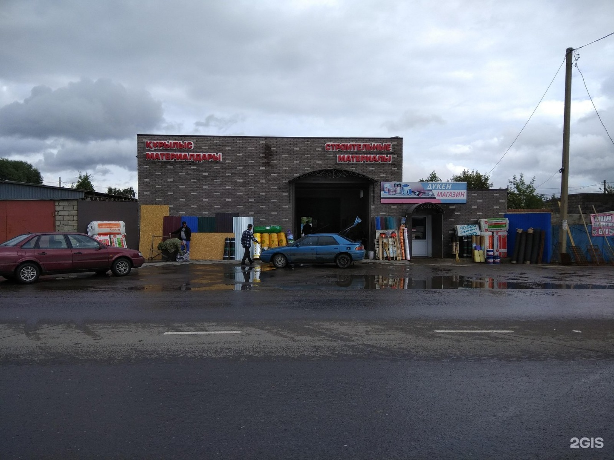

Building materials for projects in Pavlodar
The shop at Kamzina Street 199 supplies materials for repairs, finishing work and larger construction jobs. Customers can buy in retail or wholesale quantities, ask the staff for practical advice and arrange delivery in Pavlodar. The range includes dry building mixtures, plasterboard, timber sheets, insulation, waterproofing, roofing materials, fasteners, paints and varnishes. If you are planning a DIY repair, start with our services or jump to the visit information.
What the shop offers
People come here for both a single missing item and a complete order. Staff can help match products to the job, check availability and prepare a delivery. Payments are accepted by cash, bank card and QR code. The store serves private customers, builders and small contractors. Delivery is available, which is especially useful for cement, sheet materials and other heavy goods.

Plan your visit
The store is at 199 Kamzina Street, Pavlodar, Kazakhstan. It is open daily from 08:00 to 18:00; winter hours are 08:30 to 17:00. Call +7 777 132-04-74 before a large order. The Shkolnaya stop is about 100 m away.